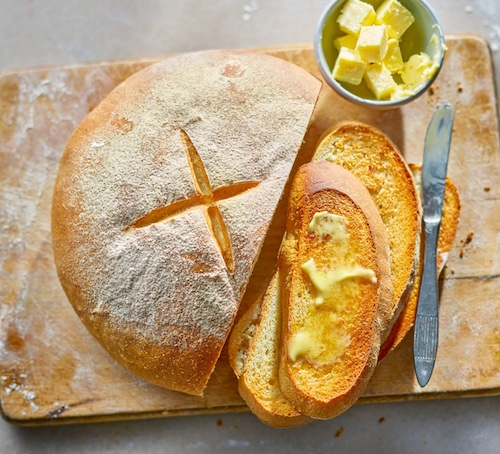

Simple Delicious White Loaf

Ingredients
- 500g strong white flour, plus extra for dusting
- 2 tsp salt
- 7g sachet fast-action yeast
- 3 tbsp olive oil
- 300ml water
Methodology
Step 1
Mix 500g strong white flour, 2 tsp salt
and a 7g sachet of fast-action yeast in a large bowl.
Step 2
Make a well in the centre, then add 3 tbsp olive oil and 300ml water,
and mix well. If the dough seems a little stiff,
add another 1-2 tbsp water and mix well.
Step 3
Tip onto a lightly floured work surface and knead for around 10 mins.
Home
Bangin Chilli